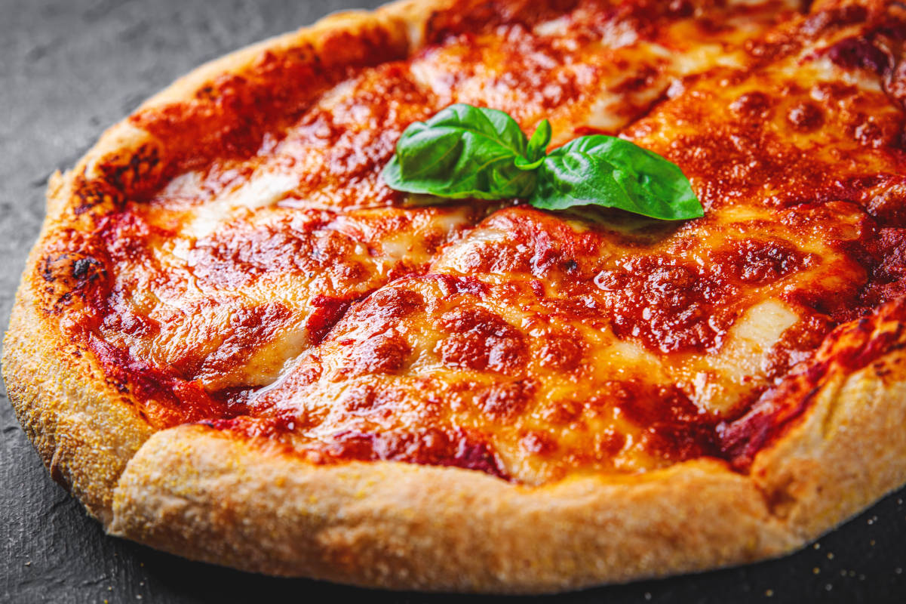

PIZZA RECIPE

Photo of a Pizza :Q___
This pizza crust recipe was given to me by a friend. It is quick, easy, and delicious!
Ingredients:
- 1 (.25 ounce) package active dry yeast
- 1 cup of warm water (110 °F/45 °C)
- 2 cups of bread flour, plus more for dusting
- 2 tablespoons of olive oil
- 2 teaspoons of white sugar
- 1 teaspoon of salt
- Tomato Sauce
- Mozzarella
- Your favourite Toppings
Steps:
- Dissolve yeast in warm water in a small bowl. Let stand until creamy, about 5 minutes.
- Combine bread flour, olive oil, sugar, salt, and yeast mixture in a mixing bowl; stir well to combine. Beat until a stiff dough has formed. Cover the bowl; let rise at room temperature until dough doubles in volume, about 30 minutes.
- Preheat the oven to 350 °F (175 °C)
- Turn dough out onto a well-floured surface. Form dough into a round and roll out into a thin crust. Cover with tomato sauce, mozzarella and your favourite toppings.